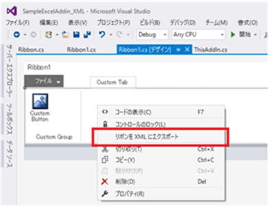
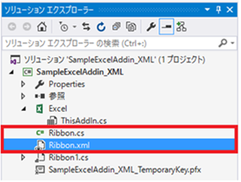
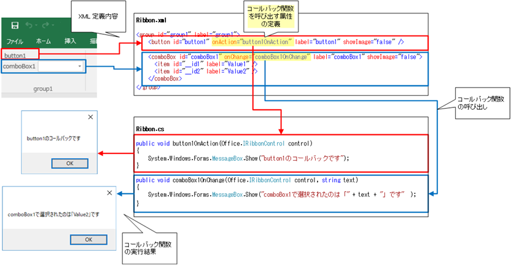
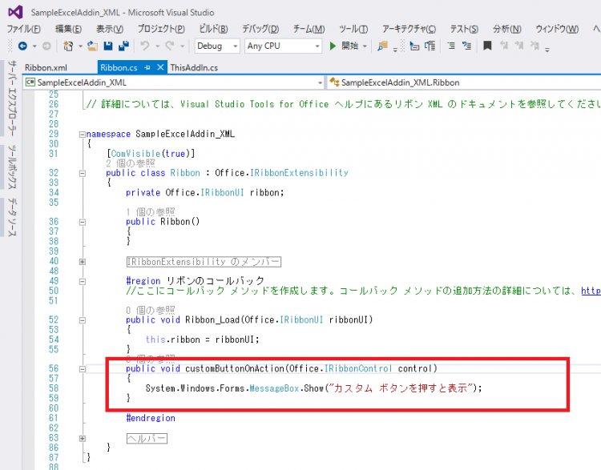
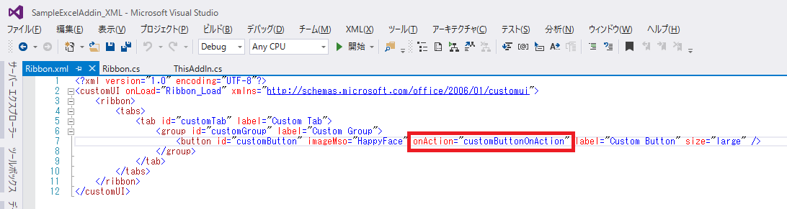
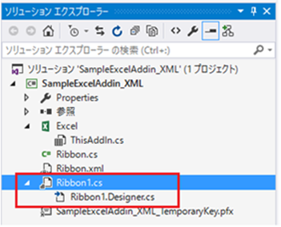

(※ 2017 年 5 月 19 日に Japan Office Developer Support Blog に公開した情報のアーカイブです。)
こんにちは、Office 開発 サポート チームの中村です。
Office リボンのカスタマイズ方法について数回にわたってご紹介していますが、パート 1 でご紹介した 3 つの方法のうち、最後の方法 「b. VSTO から XML を用いてカスタマイズを行う」について詳しく紹介したいと思います。
VSTO XML でリボンをカスタマイズする
この方法は、Visual Studio を使って VSTO ソリューションを開発し、このソリューションの中に、リボンをカスタマイズする XML とカスタマイズで実行したい処理 (コールバック関数) を実装します。ビジュアルなデザイナーと同じように、カスタマイズ内容は VSTO ランタイムによって VSTO ソリューションのロード時にOffice が読み込むことができるよう解釈され、リボンにカスタマイズが反映されます。
この VSTO で XML を用いる方法は、ビジュアルなデザイナーで作成したリボンを変換して作成することもできます。このため、一からリボン カスタマイズ XML を記述することはハードルが高いと感じる方でも、まずはビジュアルなデザイナーで作成して XML に変換した後、XML でしかできないカスタマイズを追加するといった開発手法も検討できます。
今回のサンプル作成でも、ビジュアルなデザイナーで作成したリボンから変換する方法をご紹介していきます。
メリット
VSTO はアドインおよびドキュメント形式のカスタマイズが作成できますので、リボン カスタマイズを反映させたい範囲に応じたソリューションが開発できます。
ビジュアルなデザイナーではカスタマイズできない変更も行うことができます。ビジュアルなデザイナーと XML でカスタマイズできることの差異については、以下の公開情報を参照してください。主な利点として、XML では、組み込みのタブ、グループ、コントロールについて幅広くカスタマイズを行うことができます。
タイトル : リボンの概要
アドレス : https://msdn.microsoft.com/ja-jp/library/bb386097.aspx
制約事項
- VSTO で提供される機能のため、VSTO としての開発が必要です。C++ で開発された COM アドイン等からは利用できないことや、VSTOのインストール方法 (通常は ClickOnce) などを検討する必要があります。
今回のテーマ
今回の記事では、サンプルの作成を通して以下を実現する方法をお伝えしたいと思います。
- VSTO アドインでビジュアルなデザイナーからリボン XML を作成する方法
- XML でリボンをカスタマイズする方法
サンプルの動作
比較しやすいよう、これまでと同じく、[Custom Tab] タブに表示された [Custom Button] をクリックするとメッセージ ボックスを表示をするサンプルを作成してみます。

図 1. サンプル プログラムの動作
1. ビジュアルなデザイナーでリボンをカスタマイズする VSTO ソリューションを作成
まずは、以前の投稿 (Office リボンをカスタマイズ – パート3 – (VSTO ビジュアルなデザイナーでカスタマイズ)) の手順で、ひな形となるサンプル Excel アドインを作成します。今回は、ソリューションの名前を「SampleExcelAddin_XML」にします。
※ 前回のビジュアルなデザイナーで作成したサンプル アドインが有効な状態でテストする場合、今回のサンプルと区別がつくよう、リボンのボタン名やグループ名などを適宜変更してください。
2. カスタマイズ内容を XML に変換
Visual Studio のビジュアルなデザイナー上で右クリックし、[リボンを XML にエクスポート] をクリックします。

図 2. リボンを XML にエクスポート
そうすると、「RIbbon.cs」と、「Ribbon.xml」という XML ファイルがソリューションに追加されます。

図 3. Ribbon.cs と Ribbon.xml
Ribbon.xml には、以下のようなリボンのカスタマイズ内容を表す XML コードが自動生成されているのを確認できます。
1 | <?xml version="1.0" encoding="UTF-8"?> |
3. CreateRibbonExtensibilityObject メソッドのオーバーライド
Ribbon.cs を開きます。以下のように、コード中にコメントで次に必要な作業が記載されています。
1 | // TODO: リボン (XML) アイテムを有効にするには、次の手順に従います。 |
説明の通り、まずは ThisAddin クラスに以下のコードを追加します。
1 | protected override Microsoft.Office.Core.IRibbonExtensibility CreateRibbonExtensibilityObject() |
このコードを記述しておくことで、Excel を起動してアドインが読み込まれたときに、VSTO で XML を用いてカスタマイズしたリボンの内容が Excel 上に反映されます。なお、new で生成するのは、「Ribbon.cs」に定義された IRibbonExtensibility クラスです。クラス名を任意に変更した場合は、上記のコードも合わせて変更してください。
<解説> XML でリボンをカスタマイズするときにコールバック関数を呼び出す仕組み
次の手順を説明する前に、XML でリボンをカスタマイズするときにコールバック関数が呼び出される仕組みについて解説します。
ビジュアルなデザイナーでリボンをカスタマイズしたときは、イベント ハンドラーでコールバック関数を追加しました。XML でリボンを カスタマイズする場合は、ユーザー操作に対応する「属性」を XML に記述し、ここからコールバック関数を呼び出すよう実装します。
「属性」は、XML のコントロール タグに指定する要素です。コントロールのプロパティを表す属性もありますが、「特定の操作が行われたら指定したコールバック関数を呼び出す」という属性がそれぞれのリボン コントロールに定義されています。また、この属性は、コントロールごとにそのコントロールに適したものが用意されています。
例えば、ボタン コントロールでは、ボタンをクリックすると「onAction」属性で設定したコールバック関数を呼び出します。コンボボックス コントロールでは、選択値を変更すると、「onChange」属性に設定したコールバック関数が呼び出されます。そして、onAction や onChange 属性に設定するコールバック関数を、リボン クラスに記述します。このとき、各コントロールの属性によって、引数に渡される内容は決められていますので、適切な引数を受け取るよう、コールバック関数を実装してください。
上記の説明を図に表すと、以下のようになります。(この図のコードは、作成中のサンプルとは異なります。また、コードは一部を抜粋しています。)

図 4. コールバック関数を呼び出す仕組み
コントロールごとに利用できる属性と、その引数 (シグネチャ) の一覧は以下の資料を参照してください。
タイトル : 2007 Office Fluent リボンをカスタマイズする (開発者向け) (パート 3/3)
アドレス : https://msdn.microsoft.com/ja-jp/library/aa722523.aspx
該当箇所 : コールバック プロシージャごとに正しいシグネチャを判定するにはどうすればいいですか? / 各リボン属性が示す内容を調べるにはどうすればいいですか?
4. コールバック関数の追加
それではサンプルの作成手順に戻り、コードのコメント TODO の 2. に記載の通り、コールバック関数を作成します。
コールバック関数には、リボンの操作によって行いたい処理を記述します。今回は、ボタン コントロールのクリックでメッセージ ボックスを表示したいので、onAction 属性から呼び出されるコールバック関数を、Ribbon.cs 内の、Visual Studio によって作成された “#region リボンのコールバック” の中に記述します。

図 5. コールバック関数の追加
ポイント
- コールバック関数は、public で定義します。
- 今回のサンプルでは、コールバック関数の名前は「customButtonOnAction」としましたが、これは次の手順で変更する XML と対応していれば、任意の名前で構いません。
- ボタン コントロールの onAction 属性で渡される引数を受け取るよう記述します。この場合、「Office.IRibbonControl control」 です。
5. XML への属性の追加
4. で作成したコールバック関数をボタンのクリック時に呼び出すよう、Ribbon.xml の customButton タグの要素として、onAction 属性を記述します。
今回の場合、はじめにビジュアルなデザイナーでイベント ハンドラーを作成しているため、すでに onAction 要素は追加されています。呼び出すコールバック関数名を、4. に合わせて「customButtonOnAction」に変更します。

図 6. XML への属性追加
6. ビルドして実行する
以上で、XML でのリボン カスタマイズの手順は完了です。F5 キーでプロジェクトをビルドしてデバッグ実行すると、動作を確認できます。
なお、ビジュアルなデザイナーで作成した Ribbon1.cs (Ribbon1.Designer.cs が子コードになっているもの) はもう必要ありませんので、削除します。

図 7.ビジュアルなデザイナーで作成した不要なコード
参考資料
今回説明した内容は、以下の資料を基にしています。
タイトル : リボン XML
アドレス : https://msdn.microsoft.com/ja-jp/library/aa942866.aspx
ここまで 3 回にわたって紹介してきた Office リボンをカスタマイズする方法の詳細を紹介してきました。あと何回かこのテーマで記事を投稿予定です。これ以降は、よく行われるカスタマイズ内容について、XML の書き方の具体例などに触れていきたいと思っています。
今回の投稿は以上です。
本情報の内容 (添付文書、リンク先などを含む) は、作成日時点でのものであり、予告なく変更される場合があります。